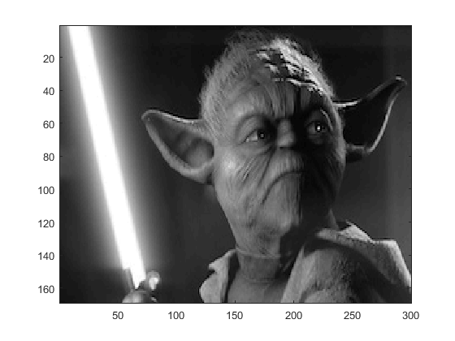
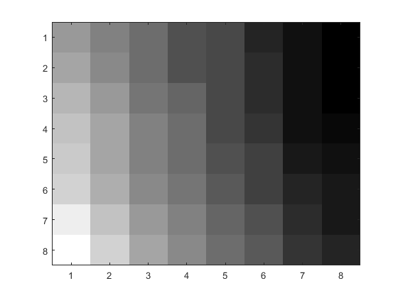
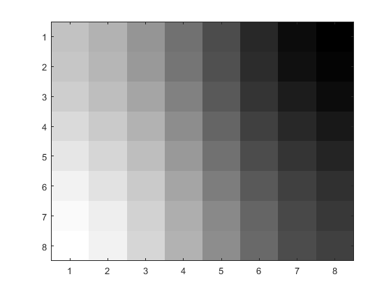
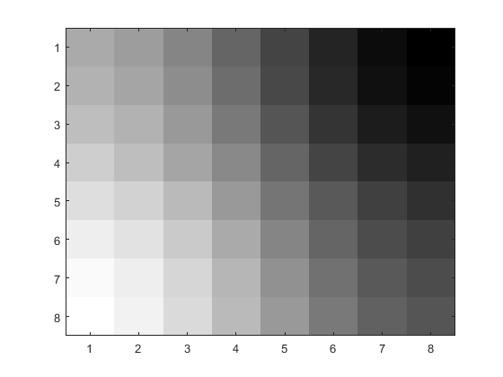
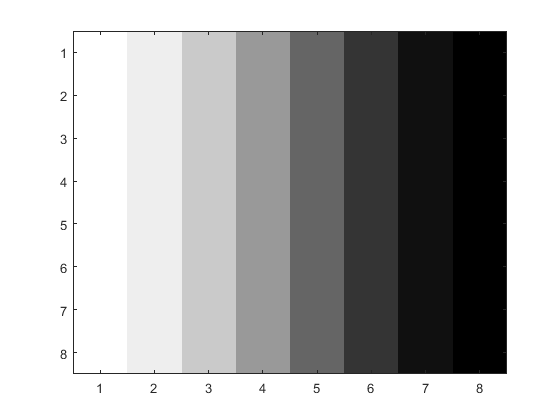
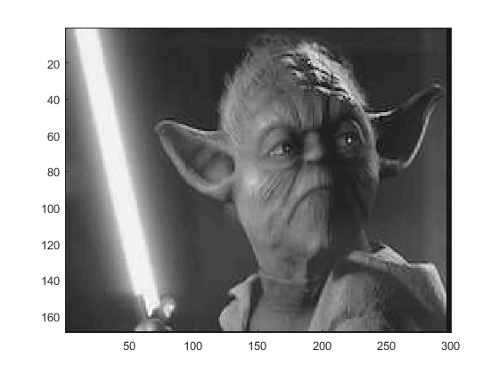
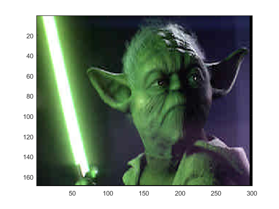

Contents
Image Loading
loadimg;
setupgray;
imagesc(img);colormap(gray)

Problem 3
Part (a)
x = 64; y = 64;
X = double(img(x+1:x+8, y+1:y+8));
imagesc(X);colormap(gray)

Part (b)
X = X - 128;
Y = dct(dct(X')')
Y =
Columns 1 through 7
-497.0000 52.3921 3.3060 6.8955 2.2500 0.5030 0.7954
-16.0477 -4.4557 -2.1043 -1.3076 -0.3779 -0.5087 -0.6062
2.4614 -0.2406 0.1036 0.7389 -0.3663 0.0195 0.0000
-2.4613 -2.1852 -0.3232 -0.4634 0.4795 -0.0585 0.0911
0.7500 0.1815 0.0957 -0.1327 -0.0000 -0.0264 0.2310
0.1488 0.7896 -0.2973 -0.5156 -0.0426 0.3348 0.0272
0.0628 0.1158 -0.0000 -0.5378 0.4223 0.0951 -0.6036
0.1306 0.2144 -0.0166 0.4480 -0.0224 0.1924 0.0459
Column 8
-0.6282
1.1715
1.3533
0.7104
-0.2716
-0.1245
0.0516
0.0844
Part (c)
setupq;
for p = [1 2 4]
Q = Qbase * p;
Yq = round(Y ./ Q)
end
Yq =
-62 3 0 0 0 0 0 0
-1 0 0 0 0 0 0 0
0 0 0 0 0 0 0 0
0 0 0 0 0 0 0 0
0 0 0 0 0 0 0 0
0 0 0 0 0 0 0 0
0 0 0 0 0 0 0 0
0 0 0 0 0 0 0 0
Yq =
-31 2 0 0 0 0 0 0
-1 0 0 0 0 0 0 0
0 0 0 0 0 0 0 0
0 0 0 0 0 0 0 0
0 0 0 0 0 0 0 0
0 0 0 0 0 0 0 0
0 0 0 0 0 0 0 0
0 0 0 0 0 0 0 0
Yq =
-16 1 0 0 0 0 0 0
0 0 0 0 0 0 0 0
0 0 0 0 0 0 0 0
0 0 0 0 0 0 0 0
0 0 0 0 0 0 0 0
0 0 0 0 0 0 0 0
0 0 0 0 0 0 0 0
0 0 0 0 0 0 0 0
Part (d)
X = double(img(x+1:x+8, y+1:y+8));
pics = zeros(8,8,4);
for p = [1 2 4]
Xmod = quantize(X, Qbase, p);
pics(:,:,p) = Xmod;
end
imagesc(pics(:,:,1));colormap(gray)

imagesc(pics(:,:,2));colormap(gray)

imagesc(pics(:,:,4));colormap(gray)

Part (e)
imgmod = zeros(h,w);
pics = zeros(h,w,4);
for p = [1 2 4]
for x = 0:8:w-8
for y = 0:8:h-8
X = double(img(y+1:y+8,x+1:x+8));
Xmod = quantize(X, Qbase, p);
imgmod(y+1:y+8,x+1:x+8) = Xmod;
end
end
pics(:,:,p) = imgmod;
end
imagesc(pics(:,:,1));colormap(gray)
imagesc(pics(:,:,2));colormap(gray)
imagesc(pics(:,:,4));colormap(gray)

Problem 4
imgmod = zeros(h,w);
for x = 0:8:w-8
for y = 0:8:h-8
X = double(img(y+1:y+8,x+1:x+8));
Xmod = quantize(X, Qjpeg, 1);
imgmod(y+1:y+8,x+1:x+8) = Xmod;
end
end
imagesc(imgmod);colormap(gray)

Reload image for color
loadimg;
imagesc(img);
Problem 5
imgmod = zeros([h w c]);
for x = 0:8:w-8
for y = 0:8:h-8
for z = 1:c
X = double(img(y+1:y+8,x+1:x+8,z));
Xmod = quantize(X, Qbase, 2);
imgmod(y+1:y+8,x+1:x+8,z) = Xmod;
end
end
end
imagesc(uint8(imgmod));

Problem 6
imgmod = zeros([h w c]);
Transform into luminance
yuv = double(img);
r=yuv(:,:,1);g=yuv(:,:,2);b=yuv(:,:,3);
y = 0.299*r + 0.587*g + 0.114*b;
u = b - y;
v = r - y;
yuv(:,:,1)=y;yuv(:,:,2)=u;yuv(:,:,3)=v;
yuvmod = zeros([h w c]);
Do regular quantization on luminance matrices
for x = 0:8:w-8
for y = 0:8:h-8
for z = 1:c
X = yuv(y+1:y+8,x+1:x+8,z);
Xmod = quantize(X, Qjpeg, 2);
yuvmod(y+1:y+8,x+1:x+8,z) = Xmod;
end
end
end
Transform out of luminance
y=yuvmod(:,:,1);u=yuvmod(:,:,2);v=yuvmod(:,:,3);
b = u + y;
r = v + y;
g = (y - 0.299*r - 0.114*b)/0.587;
imgmod(:,:,1)=r;imgmod(:,:,2)=g;imgmod(:,:,3)=b;
imagesc(uint8(imgmod));
